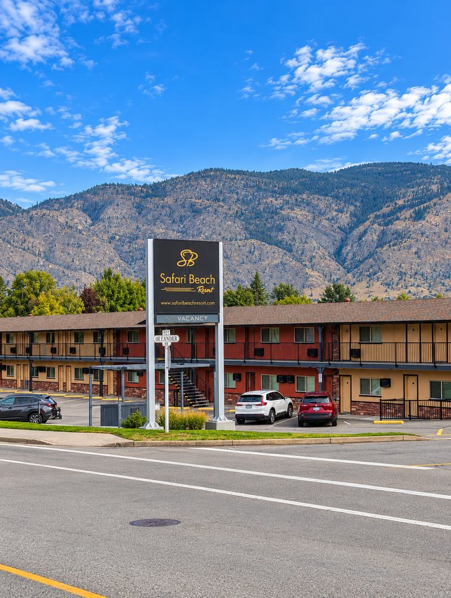
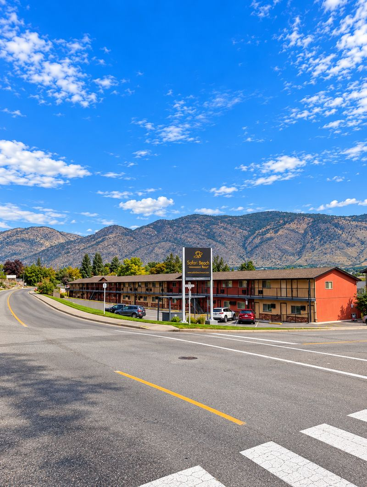
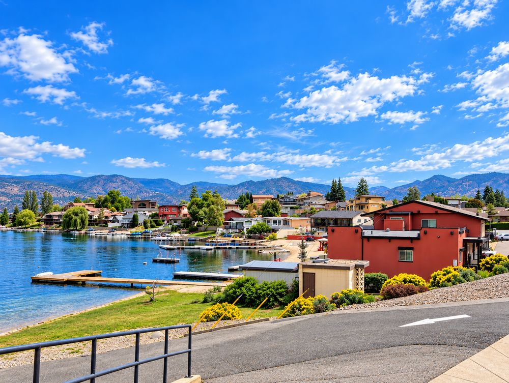

400 feet of sheltered waterfront, owned outright by the people who live there — Safari Beach Resort is genuine freehold strata, no underlying land lease, managed by its own owners rather than an outside operator.
That distinction matters more than it sounds. A lot of resort-style properties in the South Okanagan sit on leased land or reserve tenure — Safari Beach doesn't. It's protected under BC's Strata Property Act like any standard condo or townhouse, with the added twist that the management company is owned and run by the existing owners themselves, which tends to align incentives around keeping profits (and standards) with the people who actually live there.
Owner-operated management is a genuine differentiator here — confirm current governance and reserve fund status before purchasing.
Safari Beach appeals to buyers who like the idea of a resort-style waterfront community but want the straightforward legal footing of standard BC strata ownership — no reserve land tenure, no prepaid lease term to track, no fractional interest to explain to a lender. You own your unit outright, the same as any condo in BC, under the Strata Property Act.
The location — 400 feet of frontage in a sheltered bay — gives calmer water than open-lake exposure, which is a real consideration for anyone planning to keep a boat or dock. Views take in the lake, mountains, orchards and vineyards from a quiet residential setting rather than a high-traffic tourist strip.
The owner-operated management model is worth understanding on its own terms: because the management company is owned by the strata's own owners, the stated goal is returning the bulk of operating profit back to the ownership group rather than to an outside hotel brand or developer. Confirm how that structure is currently governed before you buy in.



Photos: Pat Miazga.
As of 2024, deferring a depreciation report by vote is no longer allowed — South Okanagan strata corporations (including bare land strata) have until July 1, 2027 to be compliant. See the full guide →
Standard due diligence applies fully here: depreciation report, bylaws, minutes, insurance, and reserve fund status — same as any BC strata purchase.
Confirm how the management company is currently structured and governed, who sits on it, and how profit distribution actually works today — models like this can evolve over time.
Ask about dock and moorage availability if boating matters to you — sheltered-bay waterfront communities often have limited slip capacity.
One MLS® listing says full-time residency and short- and long-term rentals are permitted, and another mentions resort rentals. Confirm the rules in the bylaws and the Town of Osoyoos short-term rental rules before counting on rental income.
Pat can help you compare the real economics here against leasehold resort options like Spirit Ridge or Rendezvous Beach — the ownership structure difference is significant.
Confirm water source, septic or sewer connection, and any shoreline protection requirements specific to this property before removing subjects.
1 currently active — $425,000
1 sold — $245,000
About $202,000 to $508,000 among the 10 lots checked, per BC Assessment
A fully furnished, remodelled waterfront end unit with a studio-style layout sold for $245,000 on September 24, 2026, after 190 days on market and a final list price of $249,000. The one active listing is a furnished two-bedroom, one-bath unit at $425,000, on the market 571 days and assessed at $371,600. The two units are very different sizes, so this is not a trend. Ask Pat for comparables that fit a specific unit.
Figures from South Okanagan MLS® active and sold data exported October 6, 2026, covering September 24, 2024 to October 5, 2026, and BC Assessment 2026 values (as of July 1, 2025). Includes listings whose address is 5815 Oleander Drive. MLS® unit numbers may differ from strata lot numbers.
One unit sold for $245,000 on September 24, 2026 after a final list price of $249,000, and one unit is listed at $425,000 (MLS® data to October 5, 2026). Unit size and condition vary widely, so two prices are a snapshot, not a trend.
BC Assessment lists 45 strata lots at 5815 Oleander Drive, recorded as 2-to-4-storey strata apartments built in 1963. One MLS® listing shows 2008, which may reflect a major update, and Pat's observation is that the buildings have been extensively renovated. Ask for renovation dates and permits.
An MLS® listing mentions a lakeside swimming pool, a private 400 ft sandy beach, a boat ramp, a dock, boat rentals, barbecues and a fire pit. Ask what the strata fee covers and how the amenities are managed.
One MLS® listing says full-time residency and short-term and long-term rentals are permitted, and another mentions resort rentals. Confirm this in the strata bylaws and against the Town of Osoyoos short-term rental rules before counting on rental income.
That depends on your goals and the specific unit — Pat can walk you through the real numbers, including rental pool terms where applicable, rather than giving a generic yes or no.
Review the full strata or lease documents, confirm current fees, and get a professional opinion on the property's condition and comparables before making an offer — see the buyer checklist above.
Freehold waterfront strata with owner-run management doesn't come up often in this style of community. Pat can tell you what's currently available.
Talk to PatAll Communities →